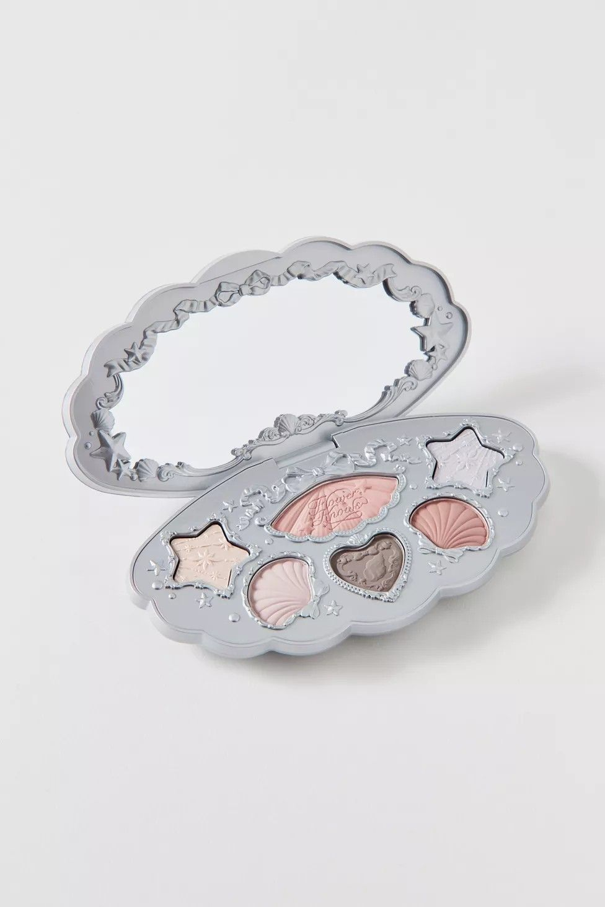
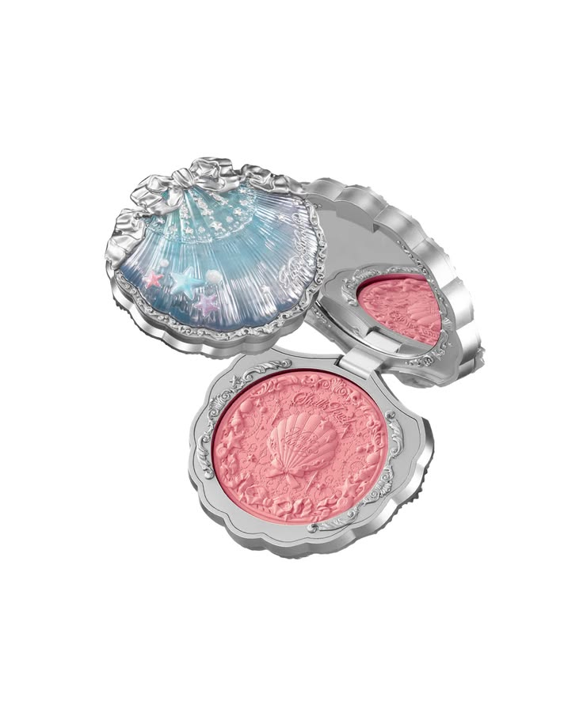
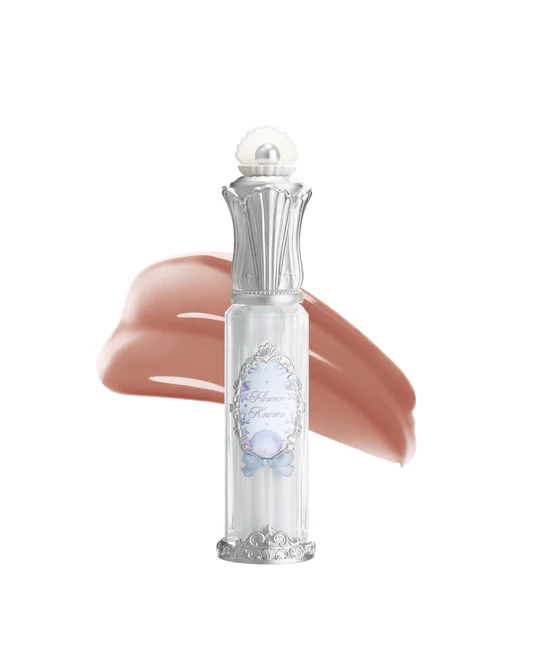
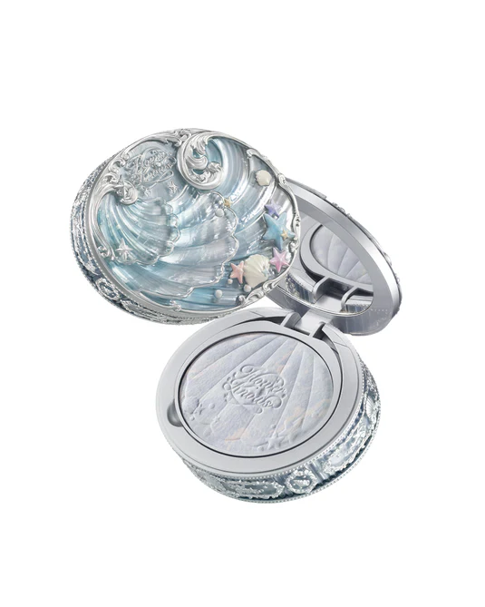
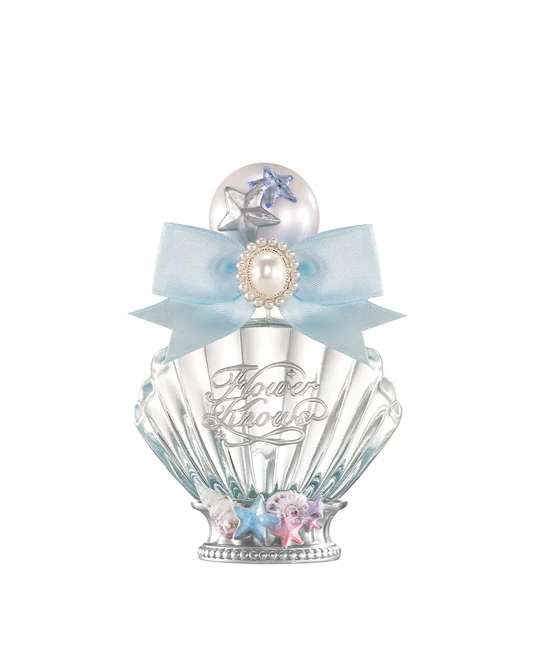

A paleta de sombras Shell's Jewel não foi criada apenas para maquiar, mas para transmitir a sensação de carregar um pequeno tesouro do oceano. Seu design lembra uma joia encontrada dentro de uma concha rara, com detalhes inspirados em pérolas e ondas do mar. As sombras possuem brilho delicado e reflexos que mudam conforme a luz, lembrando o efeito iridescente das conchas naturais. A combinação de tons suaves e cintilantes foi pensada para criar um visual etéreo e elegante, como o de uma sereia ou princesa marinha.

O blush Shell's Jewel foi inspirado no brilho suave das pérolas e no tom rosado que aparece nas conchas marinhas quando refletem a luz do sol. Diferente de muitos blushes tradicionais, ele busca criar um efeito delicado e luminoso, como se a pele estivesse naturalmente iluminada pela luz do oceano. Seu relevo artístico lembra uma joia esculpida, transformando o produto em uma peça colecionável.

O Lip Gloss Shell's Jewel foi inspirado no brilho das pérolas e na transparência da água do mar. Sua proposta é deixar os lábios com um efeito luminoso e cristalino, como se estivessem cobertos por uma fina camada de brilho oceânico. As cores são delicadas e translúcidas, valorizando a beleza natural dos lábios sem esconder totalmente sua tonalidade.

O Pó Compacto Shell's Jewel foi criado para lembrar a suavidade e a delicadeza das pérolas do oceano. Sua função é deixar a pele com um acabamento refinado e aveludado, reduzindo o brilho excessivo sem perder a luminosidade natural. Em vez de criar um efeito pesado, ele busca proporcionar uma aparência leve, elegante e delicado.

O Perfume Shell's Jewel foi desenvolvido para completar a experiência da coleção, trazendo para a fragrância a mesma sensação de elegância, mistério e encanto presente nas maquiagens. Inspirado nos tesouros escondidos do oceano, ele combina notas delicadas e refrescantes que remetem à brisa marítima, às flores raras e ao brilho das pérolas. Seu frasco possui um design sofisticado, inspirado em joias marinhas e conchas preciosas, transformando o perfume em um verdadeiro item de coleção. A fragrância foi criada para transmitir leveza e feminilidade, como se a pessoa estivesse caminhando por um reino submarino mágico repleto de tesouros e flores aquáticas.